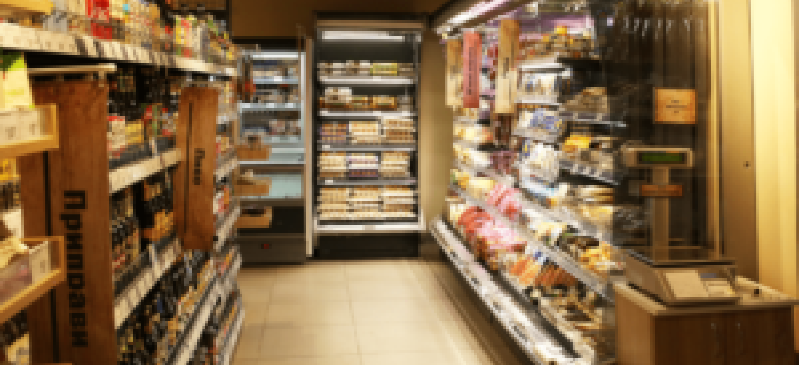

Правильно подобранный ассортимент продуктового магазина вне зависимости от его масштабов и месторасположения точно станет одним из гарантов успеха и качественных продаж. Именно по этой причине любому предпринимателю, который планирует открыть продуктовый магазин или заняться бизнесом в этом направлении, стоит максимально ответственно подойти к решению вопроса с формированием ассортимента товаров в магазине. Естественно, что он напрямую зависит от большого количества факторов. К примеру, матрица у супермаркета будет значительно шире, чем привычного для многих магазина около дома, а минимаркет станет чем-то средним между ними. В нашем сегодняшнем обзоре будем рассматривать вопросы, связанные с ведением такого бизнеса. Дадим рекомендации по составлению ассортиментной матрицы для разных типов точек по продаже продовольственных и смежных товаров, рассмотрим их базовые группы, поговорим о наименованиях, необходимых к включению в товарную матрицу. Вкратце обсудим правила оптимального мерчандайзинга, которые помогут увеличить продажи. Управление ассортиментом маназина мы предлагаем автоматизировать на базе сервиса 1С-Товары.
Средний чек небольшой торговой точки такого типа в крупном городе обычно не превышает 150-300 ₽. Товарную матрицу здесь нужно продумать особенно тщательно, чтобы привлечь большее количество посетителей, которые постепенно перейдут в категорию постоянных благодаря шаговой доступности и наличия всех необходимых для повседневной жизни товаров. Перед формированием матрицы стоит предварительно выбрать одну из групп ЦА, представители которой проживают в районе и чаще всего могут потенциально посещать вашу торговую точку: для употребления сразу после покупки. Обычно это молодые семьи и одиночки, выбирающие готовую еду, закуски и прохладительные напитки; люди, закупающиеся на определенный период в крупных гипермаркетах. Около дома обычно такими людьми покупаются продукты, относящиеся к категории скоропортящихся. Это мясные и молочные продукты, хлебобулочные изделия, овощи и фрукты; люди, которые всё покупают около дома. Обычно это люди пенсионного возраста или люди, сильно занятые на работе и в делах по дому. Аналогично к этой группе ЦА относятся люди, не имеющие собственного автомобиля.
Важно оценить место открытия или уже существующего местоположения торговой точки. Если она открыта в новом спальном районе, где стоимость жилья выше, чем во вторичном сегменте недвижимости, то покупательская способность жителей близлежащих домов будет повышенной. Соответственно, товарную матрицу здесь можно заполнять известными в плане бренда производителями продуктами высокого качества. Если торговая точка располагается в давно существующем районе, где живут люди пенсионного возраста, то можно заполнить полки ноунейм брендами пониженного в сравнении с предыдущим вариантом качества с заведомо более низкой ценой. Необходимо запомнить, что сформированный вами ассортимент не является финальным, поскольку на него могут воздействовать различные факторы: активная реклама бренда по ТВ или иным каналам связи с потребителем, появление новых и развитие старых брендов, иные причины. Важно следить за новыми трендами и оставаться «в теме». Ассортимент товаров в магазине такого типа в любом случае не нужно делать слишком обширным, поскольку застоявшиеся в обороте продукты занимают место на небольшом по площади складе, замораживают ваши оборотные активы, вы теряете деньги вследствие потерь по окончании срока годности. Важно не закупать большое количество разной продукции в рамках выбранных вами: достаточно 2-3 позиций, к примеру, молока с высокой оборачиваемостью вместо 5-10 для расширения.
Обычно в ассортиментную матрицу стандартного минимаркета может входить до 2,5-3 тысяч товарных позиций различных категорий. Основу могут составлять товары с низкими и средними ценами, предметы мелкого быта и средства бытовой химии, которые могут понадобиться на повседневной основе. Важно помнить, что основной целью покупателей, посещающих такую торговую точку, являются не массовые закупки, а возможность хотя бы немного сэкономить деньги на привычных покупках различных товаров. Поэтому цены в таком магазине должны примерно соответствовать тем, которые установлены на аналогичные товары в супермаркетах и крупных сетях. Здесь многие обратят внимание на то, что бороться в плане ценообразования с сетевыми гипер- и супермаркетами точно получится, однако помните о том, что есть огромное количество покупателей, предпочитающих качественное обслуживание и комфорт при привычных покупках. Даже чуть завышенные в сравнении с «Пятёрочкой», «Лентой» или «Окей» цены будут оправданы высокими стандартами взаимодействия персонала торговой точки с покупателями.
При формировании ассортимента для минимаркета стоит просто поставить себя на место рядового покупателя, опросить на эту тему своих родственников и близких людей. Что именно из товаров может понадобиться вам каждый день? Нужен ли выбор условного молока из 2-3 десятков брендов и позиций или же стоит ограничиться только самыми ходовыми товарами? Нужен ли широкий выбор хлебобулочных изделий или достаточно обеспечить основные потребности покупателей? Необходимо понимать, что торговая и складская площадь минимаркета просто не позволит вам размещать большое количество различных брендов и обеспечивать максимальный выбор и его свободу во всех категориях товаров. Минимаркет предназначен для обеспечения спроса в плане наличия различных товаров в большом количестве категорий (по 3-4 известных бренда для возможности выбора и удовлетворения потребительского спроса по максимуму). Широта и вариативность здесь на руку играть вам не будут, обеспечьте возможность поиска того, что нужно, из известных и популярных брендов и производителей, которые «на слуху» у большинства ваших потенциальных покупателей. В подобных минимаркетах кроме продовольственных должны присутствовать сегменты, относящиеся к непродовольственным категориям: массового потребления и средства бытовой химии, регулярно необходимые в быту. По цене они должны быть низкой или средней цены, вы торгуете эконом-сегментом. Выбор в целом тот же, что и в магазине у дома. Но стоит представить по 2-3 известных бренда, которые известны населению и точно будут покупаться. В товарную матрицу здесь можно дополнительно включить консервы (из мяса и рыбы, по 5-7 видов в каждом виде продукции), полуфабрикаты различных типов и брендов, хозяйственные разнообразные изделия, небольшое количество мелких детских игрушек и раскрасок. Если минимаркет находится в районе с большим количеством офисных центров или студенческих общежитий (либо новостроек, где в большинстве своём живёт молодёжь), то есть смысл добавить полуфабрикаты быстрого приготовления и блюда, которые можно оперативно приготовить в микроволновке или духовом шкафу.

Описание или начало статьи, которое описывает его содержание. Описание или начало статьи, которое описывает его содержание